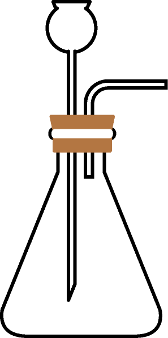
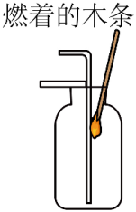
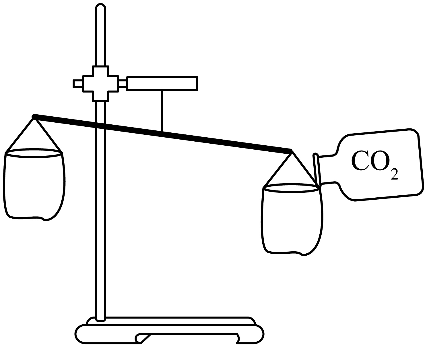
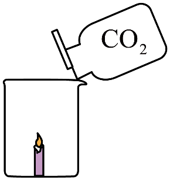
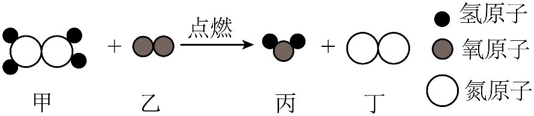

2026年北京市顺义区初中学业水平考试化学试卷 · 选择题 第21、22、23、24、25题 · 对应解析
21. 下列关于CO2的实验室制取及性质实验的说法不正确的是
 |  |
A．发生装置 | B．验满 |
 |  |
C．比较CO2与空气的密度 | D．验证CO2不支持燃烧 |
A. AB. BC. CD. D
【答案】B
【解析】
【详解】A. 实验室制取为固液不加热型反应，该装置长颈漏斗末端浸入液面下可形成液封，导管仅露出橡皮塞便于气体导出，装置合理，操作正确。
B. 验满的正确操作是将燃着的木条放在集气瓶口，木条熄灭则证明已满，图中将木条伸入集气瓶内部，操作错误。
C. 向右侧纸袋倒入后右侧下沉，可证明密度大于空气，实验设计正确。
D. 向放有燃着蜡烛的烧杯中倒入，蜡烛熄灭，可验证不支持燃烧的性质，操作正确。
Na2CO3可用于制造玻璃。20℃时，按下表数据配制溶液。完成下面小题。
序号 | ① | ② | ③ | ④ |
Na2CO3的质量/g | 10 | 15 | 20 | 25 |
水的质量/g | 100 | 100 | 100 | 100 |
资料：20℃时，Na2CO3的溶解度为21.5 g。
22. 所得溶液中，溶质与溶剂的质量比为1∶10的是
A. ①B. ②C. ③D. ④
23. ③中溶质的质量分数约为
A. 25.0%B. 21.5%C. 16.7%D. 20.0%
24. 所得溶液中，属于饱和溶液的是
A. ①B. ②C. ③D. ④
【答案】22. A 23. C 24. D
【解析】
【22题详解】
20℃时溶解度为21.5g，即100g水最多溶解21.5g溶质。①中10g溶质完全溶解，溶质与溶剂质量比为，符合要求；②③溶质质量分别为15g、20g，比例不符合；④仅能溶解21.5g溶质，比例为，不符合。
【23题详解】
③中加入20g溶质小于21.5g，可完全溶解。溶质质量分数公式为，代入数据得。
【24题详解】
20℃下100g水最多溶解21.5g，加入溶质质量大于21.5g时溶液饱和。①②③加入的溶质质量均小于21.5g，为不饱和溶液；④加入25g溶质大于21.5g，固体不能完全溶解，为饱和溶液。
25. 肼(N2H4)是一种高能火箭燃料，燃烧前后分子种类变化的微观示意图如下：

下列说法不正确的是
A. 乙和丙均为氧化物
B. 反应前后氮原子个数相等
C. 甲和丙的元素组成不同
D. 参加反应的甲和乙的分子个数比为1∶1
【答案】A
【解析】
【详解】A. 氧化物定义是由两种元素组成、且其中一种为氧元素的化合物。乙是 ，属于单质，不属于氧化物，说法错误。
，属于单质，不属于氧化物，说法错误。
B. 根据质量守恒定律，化学反应前后原子的种类、个数均不变，因此反应前后氮原子个数相等，说法正确。
C. 甲由N、H两种元素组成，丙由H、O两种元素组成，元素组成不同，说法正确。
D. 由配平的反应方程式可知，参加反应的甲、乙的化学计量数之比为，即分子个数比为，说法正确。
第二部分
本部分共9题，共35分。
〖实际问题的分析与解决〗
中华优秀传统文化是中华文明的智慧结晶。回答26~27题。